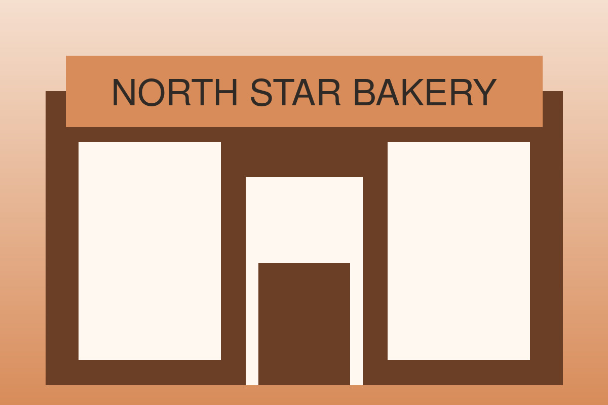
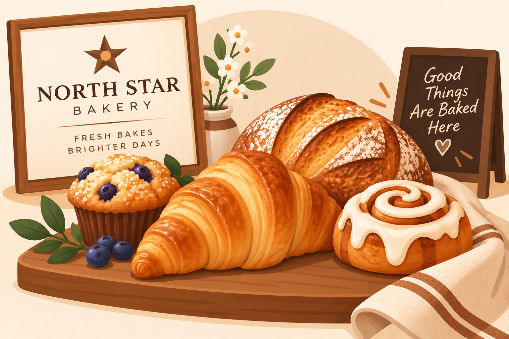

Fresh every morning
Warm bread. Sweet moments. A neighborhood favorite.
Handmade breads, flaky pastries, and celebration cakes for families, commuters, and special events.
Explore our bakery
What We’re Known For
We bake in small batches and serve every guest with care. Our goal is to make each visit feel warm and welcoming.
Featured Item of the Week

Ask our team about this week’s featured bake while supplies last.
Hours and Location
Monday–Saturday: 7:00 a.m.–6:00 p.m.
Sunday: 8:00 a.m.–2:00 p.m.
Visit our convenient neighborhood location.
Meet your local bakery
Hear Our Welcome Message
Learn what makes North Star Bakery a bright spot in the community.